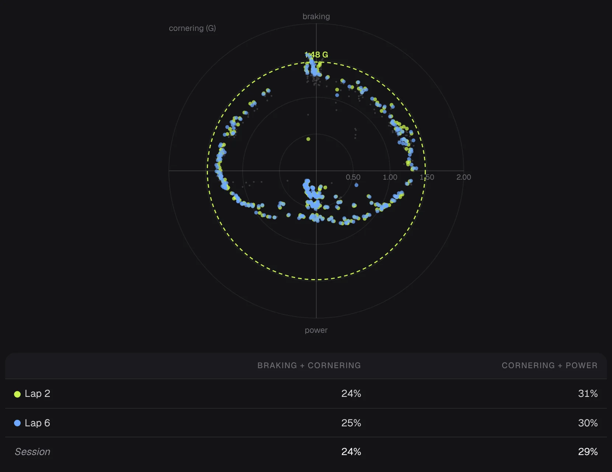

How to read a friction circle
A friction circle — also called a g-g diagram or traction circle — plots how hard the car was cornering against how hard it was braking or accelerating, at every point of a lap. It shows whether you are using the grip the tires have, and whether you blend braking and cornering together or do them one after the other.
The idea: one grip budget
A tire has a limited amount of grip. It can brake with all of it, corner with all of it, or do some of each, but the total is capped. Ask for full braking and full cornering at once and the tire slides.
Draw that limit on a chart with cornering force left to right and braking and acceleration up and down, and it is roughly a circle. Every moment of your lap is a point inside it. A point at the edge is a moment the tires were fully used. A point near the middle is a moment they were coasting.
Reading the chart
- Left and right are cornering: how many G the car was pulling in a left or right turn.
- Up and down are braking and accelerating. In Track Evolution, braking is at the top and power at the bottom.
- The center is constant speed in a straight line.
- Distance from the center is how much of the grip you were using in total.
One lap is a cloud of points. What matters is the cloud's outline, and where inside the circle it is empty.
What the shapes mean
A cross
Points bunched along the two axes, with the four corners between them empty, mean braking and turning are happening separately: brake in a straight line, come off the brake, turn, straighten the wheel, then accelerate. This is how most people start, and it is a safe way to learn a circuit. It also leaves time on the table, because between each phase the tires are doing less than they could.
A filled upper half
Points sweeping in an arc from the top of the circle round to the sides mean the brake is being released gradually as the steering goes on — trail braking. The car is still slowing as it turns in, the front tires stay loaded, and the grip in use stays near the edge from the braking point to the middle of the corner.
A filled lower half
The same arc at the bottom is throttle being fed in as the steering comes off on the way out of the corner. Most road cars cannot accelerate hard enough at track speeds to reach the edge of the circle in a straight line, so the bottom of the diagram is flatter than the top. That is the engine's limit. Look for whether the points move smoothly from the side toward the bottom, or jump there once the wheel is straight.
A lopsided circle
More cornering G one way than the other usually reflects the circuit — a track with mostly right-hand corners gives the left side of the diagram little to do — but a clear difference in corners of similar speed can point to the car's setup, or to a direction you are less confident in.
A small circle
If the whole cloud sits well inside where the car's tires should be, there is grip available everywhere. Tires, track temperature and rain all move the limit, so compare a lap with others from the same day.
Using it without overdoing it
Use the circle as a diagnosis. Trying to "fill the circle" by braking later and turning harder everywhere is how cars leave the track. Instead:
- Find the emptiest part of your diagram. For most drivers early on it is the corners between braking and cornering.
- Find one corner where that happens — ideally a slower one with room to run wide.
- Change one thing there, a little at a time: hold a trace of brake a car length further into the corner, or pick up the throttle a touch earlier as you unwind the wheel.
- Look again after the session, in the paddock. Never on track.
Trail braking changes how the car rotates on the way into a corner. If it is new to you, learn it with an instructor in the car.
What it can't tell you
- It has no map. The diagram shows how much grip you used, not where. A lap can have a full circle and still be slow because of a poor line.
- Peak G. Recorded data is smoothed, so the outline shows the shape of your grip use better than the highest G you reached.
- The limit moves. A cold morning, a hot afternoon and a damp track each have a different circle.
The friction circle in Track Evolution
When you import a recording that carries the car's cornering and braking forces — a Corvette or Cadillac PDR video, for example — the session's Grip tab draws a friction circle for each lap you select, with up to three laps overlaid in different colors and a dashed arc at the strongest combined grip of the session.
Under it, two numbers give how much of your tire work was braking while cornering and how much was cornering while on the power, for each selected lap and for the session. These are the parts of the diagram a cross leaves empty.

Point at a dot (or tap it) to mark that place on the speed, brake and throttle graphs and, for the session's best lap, on the track map. The same tab shows whether the car was understeering or oversteering in each corner.
The friction circle is on the web and in the iPhone and Android apps, and is part of Track Evolution Pro. Importing the recording, its lap times and the speed, throttle and brake graphs are free.